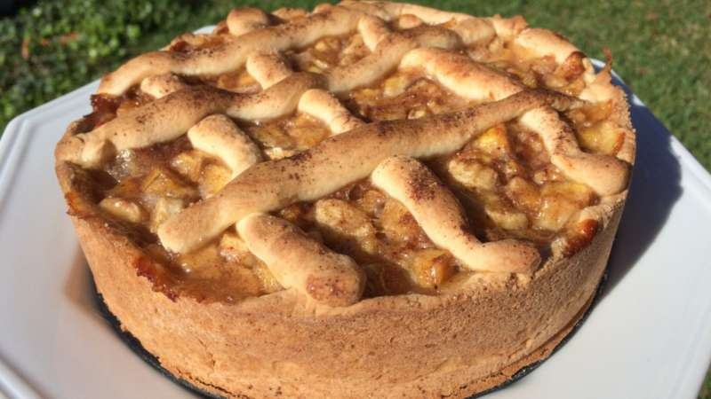

Um pouco da nossa história
Um negócio de família com uma pitada mineira onde nossa criadora Aparecida, mais conhecida como Cida, nasceu, cresceu e aprendeu seus dotes culinários. Desde a sua adolescência, tem esse amor por fazer doce, e quando todos falaram que pagariam pra comer a famosa torta de banana, a queridinha do nosso cardápio, ela pensou em abrir um negocio para ganhar uma renda extra.
Nossos Doces
- Torta de Banana
- Palha Italiana
- Brigadeiro Gourmet
- Cupcake